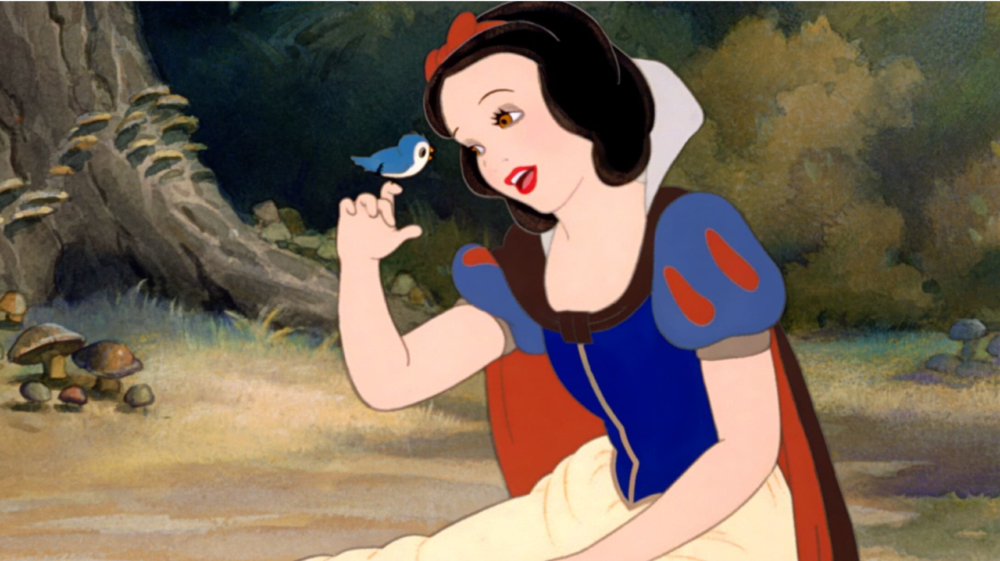
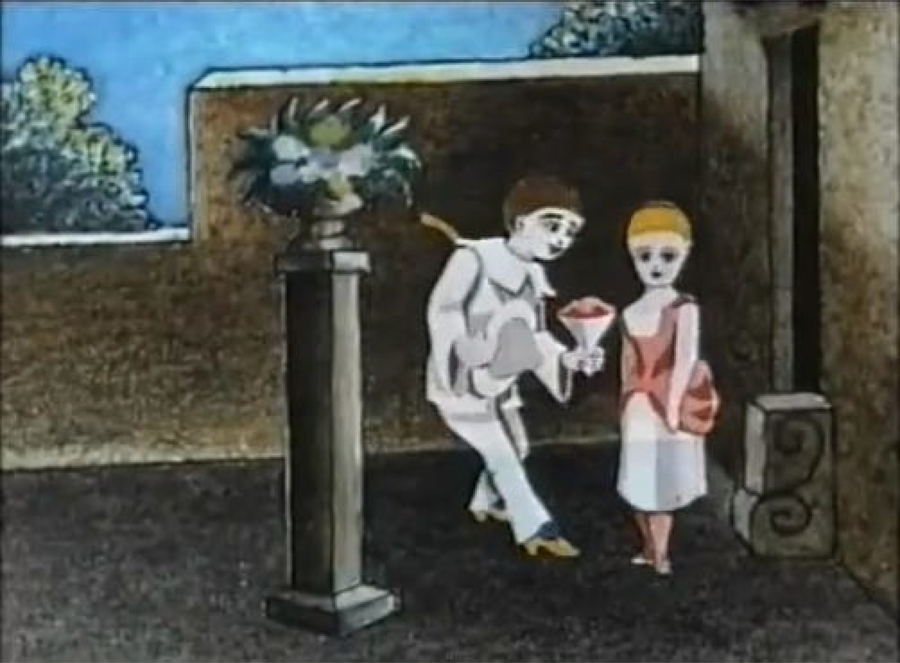
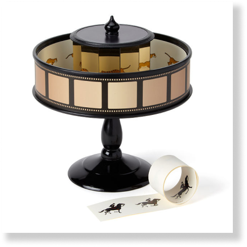
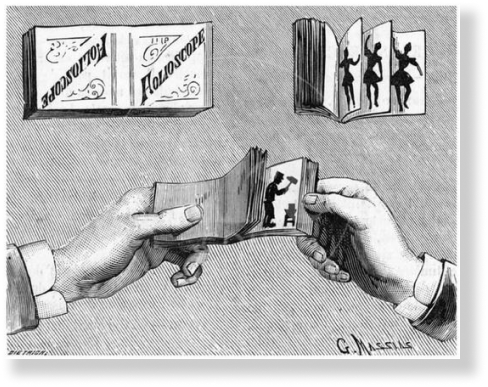
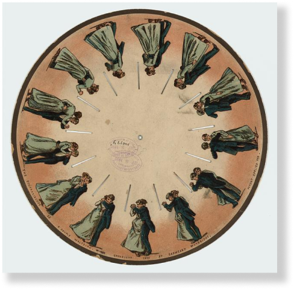
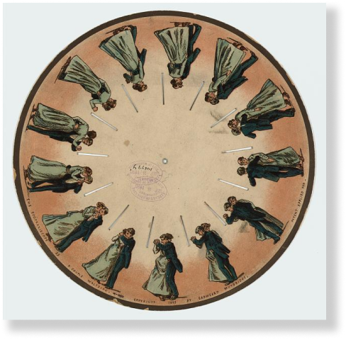
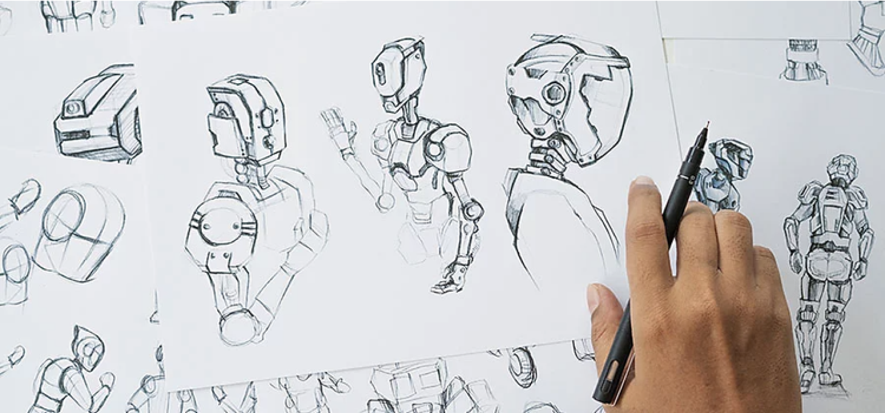

What Is the History of Computer Animation?
What Was the First Feature-Length Animated Movie?
What Was the First Animated Film?
Examples of Early Animation Devices
What Is the History of Animation?
What Is Animation?
Jump To Section
Powered by Miasco 2023

To the top
Top 10 Study Hacks to Elevate Your Learning Experience
Navigating College Life: A Survival Guide for Freshmen
The 1960s witnessed a surge in innovative digital graphics, fueled by
the increasing prevalence of computers. By the 1970s, computer graphics
had evolved into a recognized art form, with a growing number of
individuals exploring its creative potential. Advancements in graphic
design tools and computer software persisted, with the University of
Utah receiving government funding that spurred pioneering animation
projects. Among these, Ed Catmull's Hand/Face (1972) stands out. The
capabilities of computer animation continued to advance, captivating
more enthusiasts who explored the possibilities of this evolving medium.
This trajectory ultimately led to the emergence of today's CGI
masterpieces that dominate contemporary media.
As early as the 1940s, individuals initiated experimentation with
computer graphics primarily for scientific and research purposes. John
Whitney Sr., a composer, animator, and inventor, repurposed a Kerrison
Predictor—a World War II-era anti-aircraft fire-control system—into a
custom computer device. Utilizing mathematical control for more specific
manipulation, they gained the capability to generate precise lines and
shapes. Whitney Sr., collaborating with the renowned graphic designer
Saul Bass, applied this technology to animate the opening title sequence
of Alfred Hitchcock's 1958 film Vertigo. Notably, Vertigo is recognized
as one of the initial live-action films to incorporate computer
animation.
What Is the History of Computer Animation?
Walt Disney Studios' Snow White and the Seven Dwarfs (1937) holds the
distinction of being the inaugural animated feature film. Employing the
traditional animation technique of cel animation, the film involved
creating two-dimensional visuals on transparent celluloid sheets. This
method facilitated the transfer of illustrations between frames,
eliminating the need to redraw entirely for each frame. Consequently,
this streamlined process saved time and reduced labor in the production
of the film.
What Was the First Feature-Length Animated Movie?

Humorous Phases of Funny Faces (1906), crafted by British-American
producer J. Stuart Blackton, is deemed by some as the inaugural film in
the animation industry. Blackton employed stop-motion animation to
portray a sequence of animated characters undergoing various movements
in the three-minute film. Notably, this work holds the distinction of
being the first animated film recorded on standard picture film,
establishing it as the initial instance of an animated movie captured on
authentic film.
Émile Reynaud's Pauvre Pierrot (1892) achieved an extended viewing time
by employing an elongated image roll for the praxinoscope. Notably, this
work is frequently acknowledged as the inaugural animated film due to
Reynaud's use of a hand-painted picture roll featuring 500 individual
images, diverging from the conventional use of photographs. Nonetheless,
film historians contend that Émile Cohl's Fantasmagorie (1908) holds the
distinction of being the first true animated movie produced through
traditional animation techniques.
What Was the First Animated Film?

Pauvre Pierrot
In 1877, the praxinoscope took over from the zoetrope, introducing a
modification by substituting the zoetrope's narrow vertical slits with
an inner circle of angled mirrors. This innovation aimed to enhance the
clarity and vividness of the animation compared to the previous method
of viewing moving illustrations through slits.
6. Praxinoscope
Originating in 1868 and Latin for "moving picture," the kineograph,
commonly known as the flipbook, is a compact collection of drawings.
Each page of the flipbook depicts a distinct instance of movement. When
the pages are rapidly flipped in succession, they create an animated
sequence, bringing a scene to life.
5. Kineograph
Following the phenakistoscope, the zoetrope emerged as its successor.
This device took the form of a spinning cylinder and displayed images in
successive stages of motion. Notably, the zoetrope allowed multiple
viewers to observe the animated sequences simultaneously. The cylinder
featured several vertical slits, preventing the spinning photographs
from merging into a blur and enabling the viewer to perceive the
distinct phases of motion.
4. Zoetrope
The Fantascope, also referred to as the phenakistoscope or sometimes
spelled "phenakistiscope," was introduced around 1833. It utilized
spinning cardboard disks adorned with paintings, and these disks were
reflected in mirrors to generate the illusion of movement. However, the
unique experience offered by the phenakistoscope was limited to one
viewer at a time.
3. Phenakistoscope
The thaumatrope, an optical toy from the nineteenth century, consisted
of a picture disk suspended by two strings. When these strings were
rotated, causing the disk to spin, the images on each side of the disk
would blend into a single image. This effect was achieved through the
"persistence of vision," an optical illusion wherein the eye continues
to perceive movement even after the motion has ceased.
2. Thaumatrope
In 1603, the magic lantern emerged as an image projection apparatus.
This device featured a mirror positioned at the back of a light source,
initially a candle, which directed light through elongated glass slides.
As a result, the illustrations on these slides were projected, and when
the slides were arranged consecutively, they created a semblance of
movement. The magic lantern is recognized as the earliest form of
"moving pictures."
1. Magic lantern


 


Over the course of history, various devices and toys have existed with
the ability to portray dynamic scenes featuring animated cartoon
characters, individuals, objects, and events.
Examples of Early Animation Devices
The history of animation reaches back well before the advent of film,
with early animators innovating methods to craft movies without the aid
of cameras or recording technology. Long before the era of acclaimed CGI
Hollywood hits like Pixar's Toy Story 3 (2010) or Academy Award-winning
films like Finding Nemo (2003), there existed pioneering works such as
J. Stuart Blackton's The Enchanted Drawing (1900). This groundbreaking
piece, the first animated sequence captured on standard picture film,
ingeniously employed a live-action actor, props, and stop-motion
techniques to bring to life a two-minute comedic scene.
The history of animation reaches back well before the advent of film,
with early animators innovating methods to craft movies without the aid
of cameras or recording technology. Long before the era of acclaimed CGI
Hollywood hits like Pixar's Toy Story 3 (2010) or Academy Award-winning
films like Finding Nemo (2003), there existed pioneering works such as
J. Stuart Blackton's The Enchanted Drawing (1900). This groundbreaking
piece, the first animated sequence captured on standard picture film,
ingeniously employed a live-action actor, props, and stop-motion
techniques to bring to life a two-minute comedic scene.
What Is the History of Animation?
Animation involves the art of infusing life into illustrations or
non-living entities through the creation of motion pictures. This
creative process utilizes various techniques to manipulate images and
drawings, creating the illusion of movement and conveying a visual story
to the audience. Early examples of animation can be seen in Grecian
pottery, where scenes of motion and expressions were depicted on its
surface, resembling a primitive form of a comic strip.
What Is Animation?

The origins of animation can be traced to ancient times, with its
presence evident in various forms throughout history. Whether through
ancient Greek pottery, seventeenth-century ocular toys, or the advanced
Computer-generated Imagery (CGI) of the twenty-first century, animation
has undergone diverse transformations, culminating in the technological
marvels we witness today.
A Historical Perspective of the
Art and Science of Animation
Flex
Blogs
Home
MIASCO